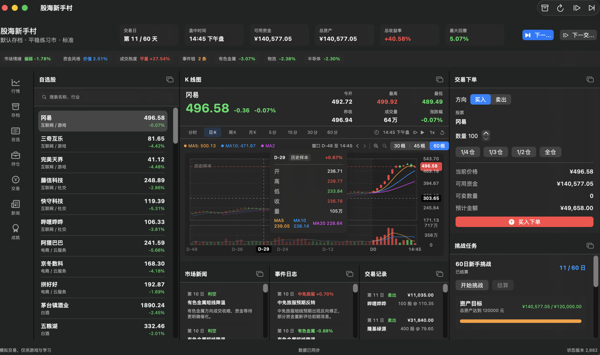
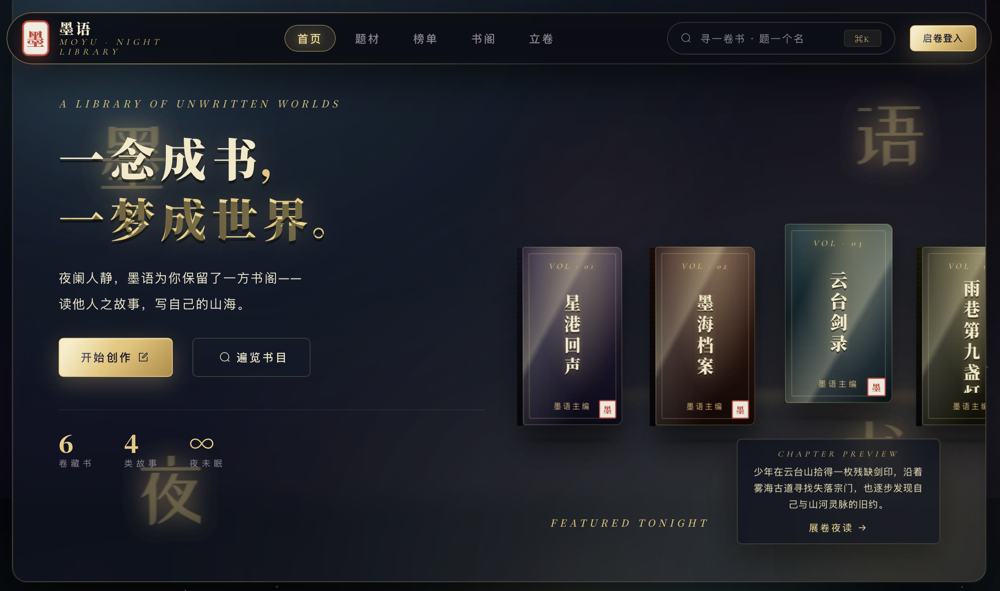
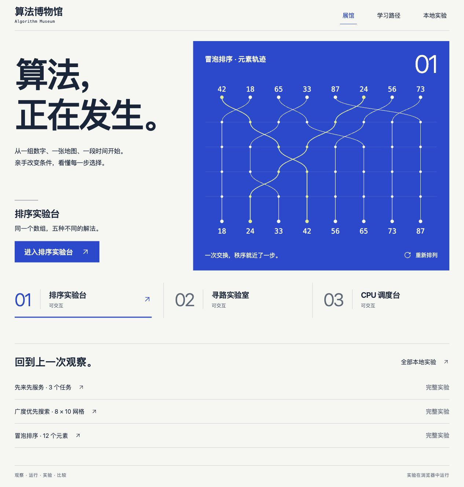
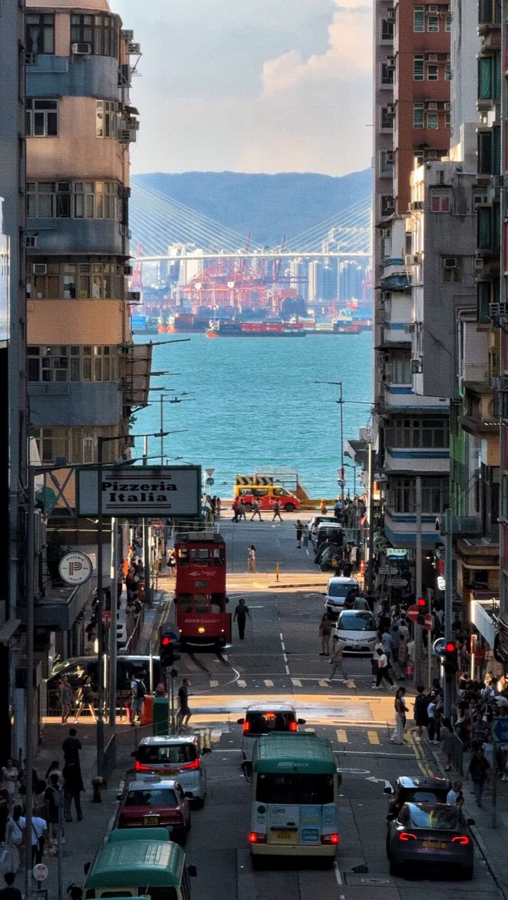
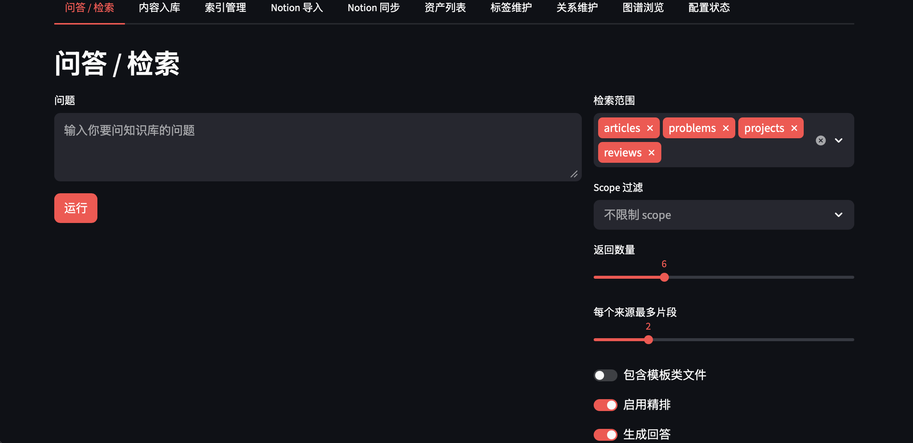
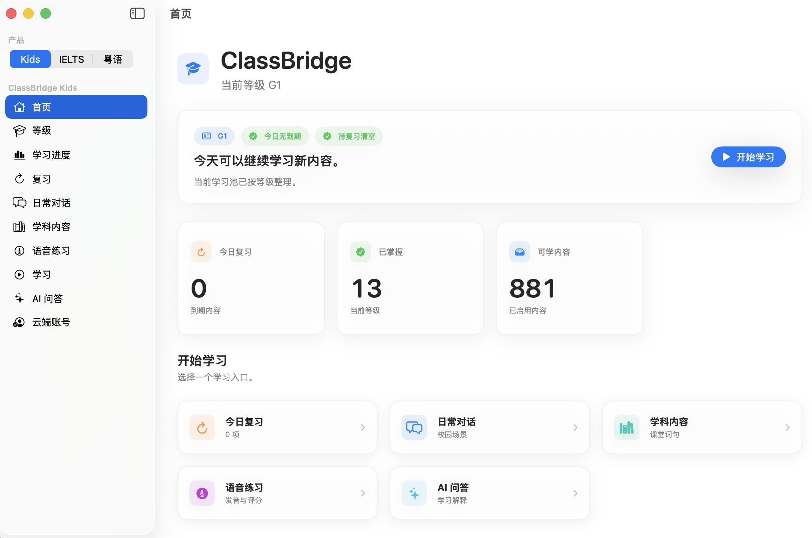

Work
The archive
15 projects. Each one opens as a case study.

Civilization Z

Trading Simulator

BF Badminton

Moyu Night Library

Algorithm Museum

Word Note

ML-SHARP

Local Knowledge Assistant

ClassBridge Product Suite

YOLO26 Multimodal
Metro Gate Detection
NeuralVision Pro
DataFlow Pipeline
PixelMind SDK